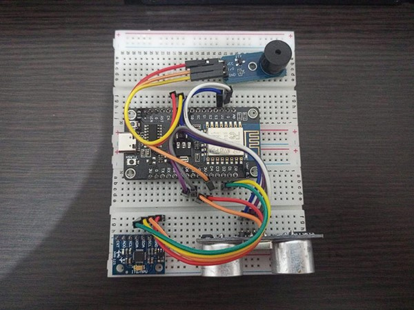

An IoT-based fall detection and obstacle monitoring system for visually impaired individuals using ESP8266, MPU6050, and HC-SR04 sensors. The system performs real-time motion monitoring, obstacle detection, and remote data visualization through a web interface.

This is the video of how the system works, but I somehow lost the final version of the video, so this is the video of the prototype testing, which is not the final version of the system (the fall detection still wasn't working as expected), but it can give you an idea of how the system works.
During the development of the fall detection system, I encountered several challenges. One of the main issues was the sensitivity of the IMU sensor. Sometimes, it was not sensitive enough to detect falls, which I suspect was caused by incorrect accelerometer and gyroscope range settings that affect the sensitivity of the data.
Additionally, using a website as an alarm system for caregivers may not be the most effective solution because caregivers need to continuously monitor the website. It would be more practical and convenient if the alerts were sent through SNS notifications like WhatsApp or Telegram instead.